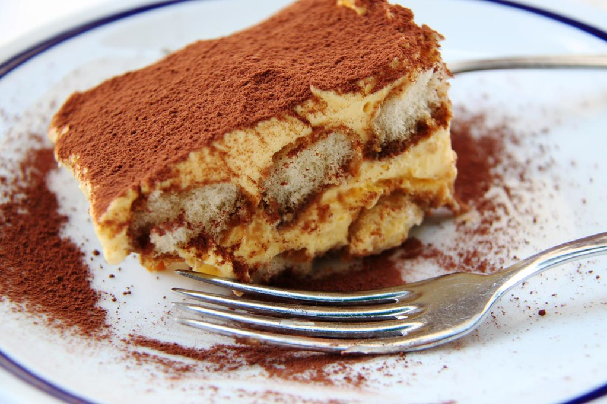

Regresar
Tiramisú

Descripcion
El tiramisú es un postre italiano clásico que combina capas de bizcochos empapados en café y licor, con una cremosa mezcla de queso mascarpone, huevos y azúcar, todo espolvoreado con cacao en polvo.
ingredientes
Bizcochos De Soletilla
- 3 huevos
- 110g de azucar
- 140g de harina
- azucar glas
Tiramisú
- Bizcochos de Soletilla
- 250ml de cafe
- 110g de azucar
- Nuez moscada
- 15ml de ron
- chorrito de sirope de arce
- 3 yemas
- 225g de mascarpone
- 120ml de nata de montar
- cacao en polvo
- chocolate
Pasos
Bizcochos De Soletilla
- En un bol, casca los huevos y añade el azúcar. Bate con unas varillas hasta que se incorpore.
- Pon el bol encima de una cacerola con dos dedos de agua hirviendo, y bate constantemente hasta que la mezcla alcance los 71 grados centígrados, lo cual te llevará unos 5 minutos.
- Retira del fuego y continúa batiendo unos 6 o 7 minutos, o hasta que la mezcla tenga una consistencia extremadamente espesa.
- Añade al mismo bol la harina de trigo, tamizándola. Mezcla todo con una espátula, haciendo movimientos envolventes.
- Transfiere la masa a una manga pastelera y forma los bizcochos en una bandeja de horno forrada con papel vegetal.
- Espolvorea los bizcochos con abundante azúcar glas y mételos a un horno a 180 grados, de 8 a 12 minutos, o hasta que empiecen a tostarse.
- Sácalos, transfiérelos a una rejilla y déjalos enfriar.
Tiramisú
- Prepara 250 ml de café.
- Transfiere el café a un bol y añade 30 gramos de azúcar, el ron (opcional), el sirope de arce (opcional) y la nuez moscada rallada al gusto. Mezcla y déjalo enfriar.
- En un bol, mezcla las yemas de huevo con 80 gramos de azúcar. Mézclalo.
- Pon el bol encima de una cacerola con dos dedos de agua hirviendo, y bate constantemente hasta que doblen su volumen y su consistencia sea espesa. Resérvalo.
- En otro bol, añade el mascarpone y bátelo con las varillas, hasta que esté muy blandito.
- Añade el queso a las yemas montadas e incorpóralos con movimientos envolventes.
- En un bol grande, añade la nata para montar y móntala hasta que forme picos blandos. Añade la otra mezcla e incorpóralas con movimientos envolventes.
- Empapa 3 segundos cada bizcocho de soletilla en la mezcla de café, y colócalos en el fondo del molde con la parte lisa hacia arriba.
- Añade la mitad de la mezcla del mascarpone y extiéndela hasta que forme una capa homogénea.
- Coloca otros cuatro bizcochos empapados y cúbrelos con el resto de la mezcla. Extiéndela hasta que forme una capa homogénea.
- Cubre el molde con papel film y mételo a la nevera un mínimo de 6 horas.
- Quita el papel film y espolvorea cacao en polvo por encima.
- Corta una porción y sírvela. Finaliza con chocolate rallado por encima.